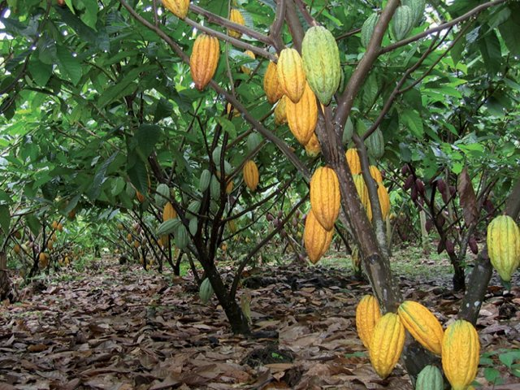
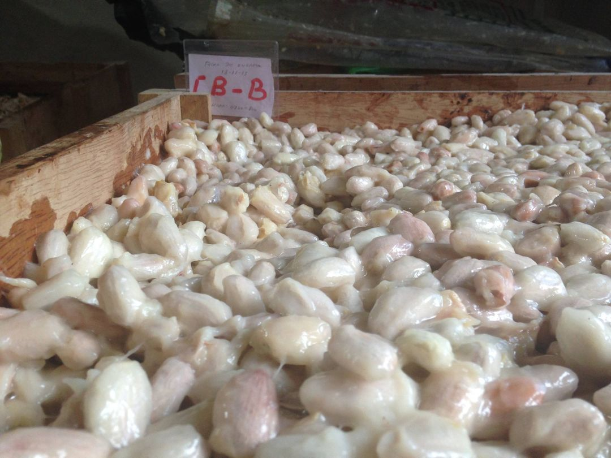
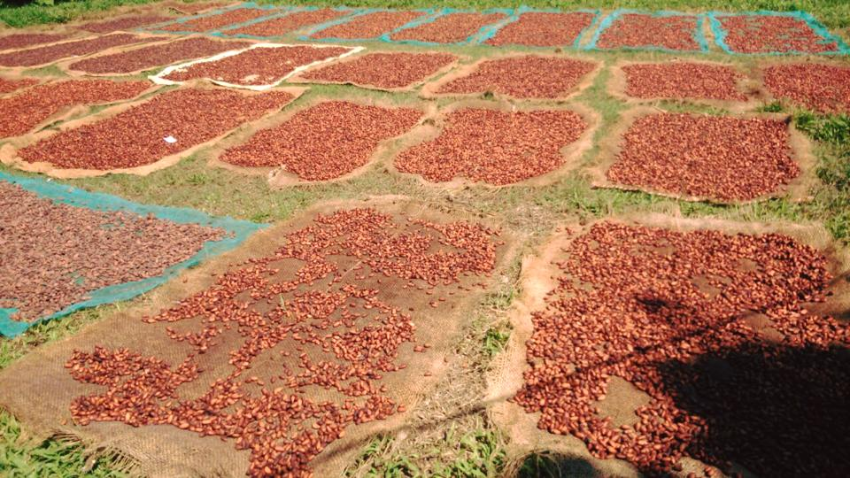
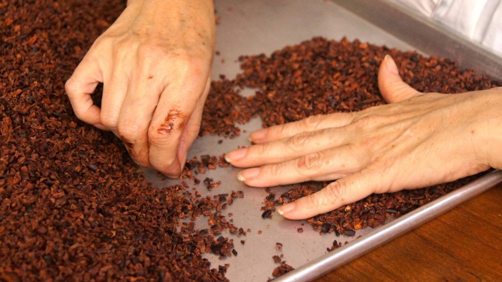

EMPAQUETADO Y ALMACENAMIENTO
Finalmente el chocolate se desmolda, se empaqueta y se almacena para su posterior distribución
Dependiendo del tipo de producto que se quiere elaborar, cacao en polvo, chocolate blanco o chocolate, se llevarán a cabo una serie de procedimientos. Te los detallamos a continuación.
El primer paso para entender el proceso de fabricación del cacao tiene lugar con la cosecha, momento en el que se recogen las vainas de cacao maduras de los árboles y se abren a mano para extraer las semillas de cacao.
Las semillas del cacao extraídas de la cosecha se preparan para un proceso de fermentación prolongado, con tal de que desarrollen tanto el sabor como el aroma característico del cacao.
de haber fermentado el tiempo suficiente se las expone al sol o a máquinas de secado.
Una vez que las semillas están secas se inicia su proceso de tueste para potenciar los efectos de la fermentación.

Durante el descascarillado se separa la cáscara de la semilla.
El siguiente paso es moler las semillas de cacao hasta conseguir una especie de pasta casi líquida.
Según el tipo de resultado que se desee. la pasta de cacao obtenida de la molienda se mezcla con otros ingredientes como azúcar o leche.
En el refinado se reduce el tamaño del producto hasta las dimensiones deseadas, de manera que todo quede homogéneo y listo para el siguiente paso.
Una vez se han integrado todos los elementos es el momento del conchado, un proceso de amasado y calentamiento repetido para mejorar la textura y sabor.
En el proceso de templado se baja la temperatura de la mezcla y se calienta para formar cristales de manteca de cacao, lo que da al chocolate un acabado brillante y crujiente.
Durante este proceso el producto se vierte en moldes para darle forma, según la intención.
En este punto, los moldes se enfrían para solidificar el chocolate.
Finalmente el chocolate se desmolda, se empaqueta y se almacena para su posterior distribución
Debido a su alto nivel de pureza, uno de los beneficios de consumir cacao ecológico es que éste es una fuente rica de antioxidantes beneficiosos para el organismo. Además, consumido de manera correcta, puede contribuir a llevar una nutrición equilibrada y prevenir enfermedades cardiovasculares.